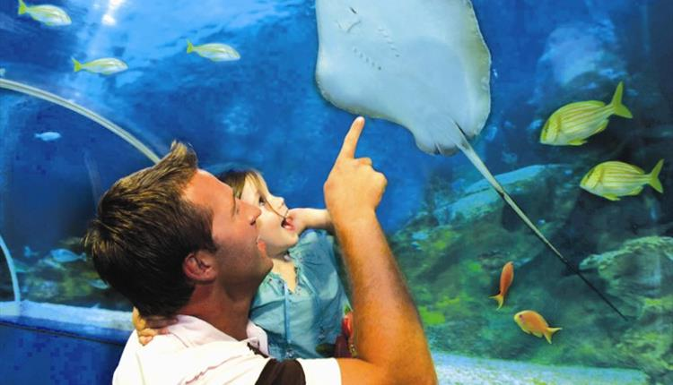

Blue Reef Aquarium

Blue Reef Aquarium
Blue Reef is part of an exciting new generation of aquarium attractions designed to inspire deeper understanding and appreciation of the natural world. Situated on Towan Beach in the centre of Newquay, opposite the famous island, the Newquay Blue Reef Aquarium is a stunning visit.
Be amazed by the local marine species from the Cornish coast to hundreds of tropical species in the gigantic ocean display complete with underwater tunnel.
We want to show you all the fantastic creatures that live in our seas and oceans. Our displays take you on an undersea tour; from the British coastline to faraway tropical reefs and lots more in between.
During your visit, you'll come face to face with incredible sea life with everything from giant crabs and lobsters to seahorses and tropical sharks and you'll get a chance to find out more about these creatures' amazing lives in over 40 naturally recreated displays.
Blue Reef is one of the UK's leading aquariums with a commitment to providing education about the marine environment but in a fun and entertaining way.
Opening times and Prices
Opening times
Open everyday from the 1st Jan until the 31st of December but Christmas Day
Open 10am - 4pm (November - February) and 10am - 5pm (March - October)
Ticket Prices
Adults - £9.68
Junior - £7.43
Concession - £8.78
Family (2 Adults and 2 Juniors) - £33.20
Under 3's are free
Map